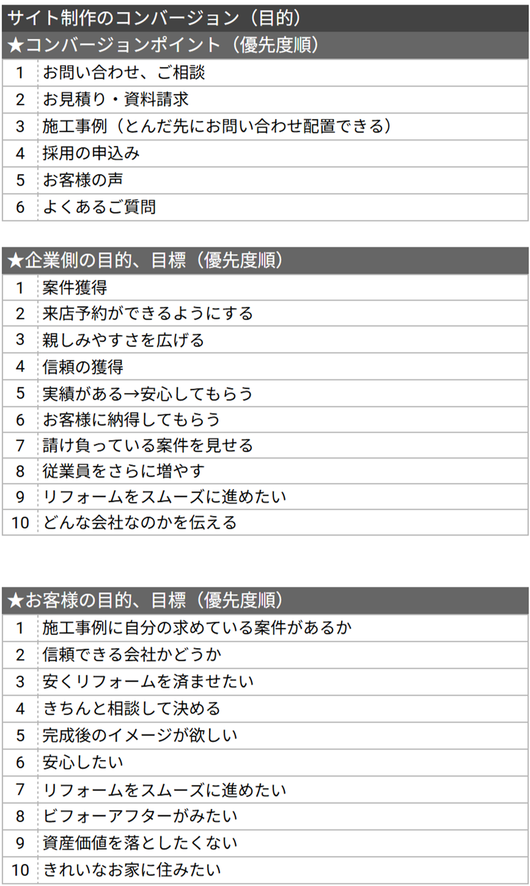

神奈川、東京を中心に30～60代の一般家庭に向けたリフォームを行う「株式会社カドタリフォーム」のコーポレートサイトを、新規顧客の獲得と売上向上を目的として制作しました。 創業当時から使い続けていたホームページを一新するにあたり、リフォーム検討者が抱きがちな「職人の怖いイメージ」を払拭することを重視しています。実際の従業員の方々は、見かけによらず非常に丁寧で思いやりのある方ばかりであるという強みを活かし、サイト全体を通して「あたたかい雰囲気」が伝わるデザインを目指しました。 ターゲット層である30代〜70代の個人ユーザーは、専門知識が少ないことへの不安や、知らないことへの恐怖を抱えていることがペルソナ設定の段階で分かりました。そのため、安心して利用できるよう「分かりやすい情報設計」と「安心感を与える色と配置」を前提とした設計を行っています。 また、昨年からの従業員増員に伴い、リフォーム案件をさらに請け負いたいという企業側のニーズに応えるため、これまでの豊富な実績を効果的に掲載。地域からの信頼を視覚的に積み重ねることで、新規開拓に繋がる信頼性の高いコーポレートサイトへと仕上げました。
URL
担当
競合サイト調査5Hペルソナ設計4Hサイトマップ作成4Hワイヤーフレーム制作8H画像加工・選定5Hコーディング30Hロゴデザイン10H
サイトの目的


デザインについて
今回のサイト制作では、新規顧客の獲得と売上向上を目的に、30代〜70代の個人ユーザーが抱く「情報不足への不安」や「知らないことへの恐怖」を解消することに注力しました。そのため、「分かりやすい情報設計」と「安心する色と配置」を徹底しています。 具体的には、職人の怖いイメージを払拭するため、従業員の皆様の「丁寧で思いやりのある人柄」が伝わるあたたかい雰囲気を重視しました。また、ビジョンである「お客様のしっくりくる。」を具現化するため、施工事例を多く掲載することで、完成後のイメージを具体的に持てるように工夫しています。
コーディングについて
ワイヤーフレームの前にコンセプトシートを作り、ペルソナ、サイトマップ、配色などを整理しておくことで、コーディング工程をスムーズに進めることができました。制作を通して、事前の設計が全体のクオリティや制作効率に大きく影響することを実感しました。 また、施工事例やバナー画像がバラバラなサイズであっても、枠内に全体が収まるように、視覚的な統一感を出しました。設計を明らかにすることは、ユーザーへの配慮だけでなく、制作に関わるメンバー全体への配慮にもつながるという学びを得ることができました。